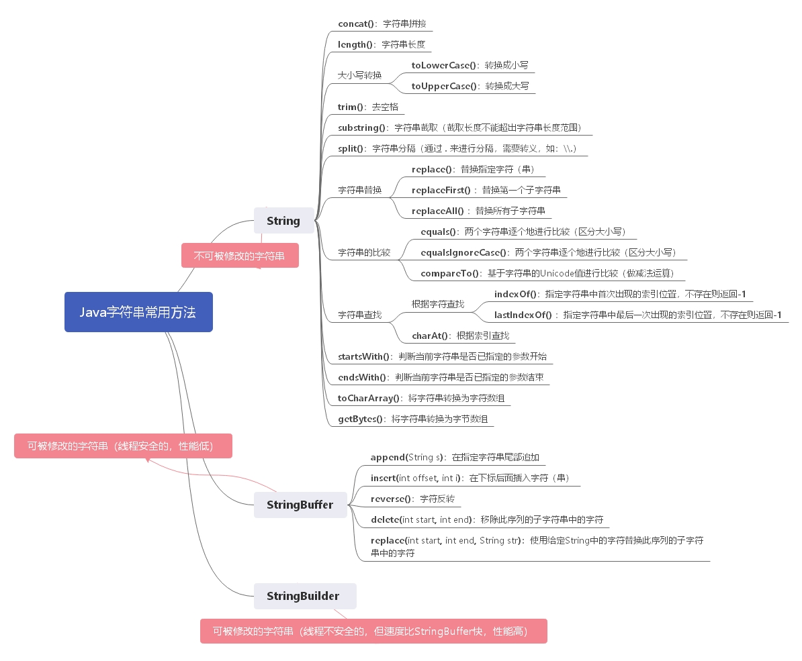

String修饰的是不可变的字符串，而StringBuffer和StringBuilder类的对象是可以被修改的。
StringBuffer和StringBuilder 类不同的是StringBuilder 是线程不安全的，但运行速度要比StringBuffer快（性能高）；StringBuffer是线程安全的（性能低）。

String str = "Hello";
//或
String Str2;
str2 = "Hello";
//或
String str3 = new String("Hello");
String str4 = new String(str3);//加号（+）拼接 耗时高(慢)
String str = "Hello ";
String str2 = "World";
System.out.println(str+str2);
//使用concat()方法 耗时低(快)
String str3 = "Hello";
str3 = str3.concat(" World");
str3 = str3.concat(" 你好");
System.out.println(str3);如果字符常量池中已经包含一个等于此String对象的字符串,则返回常量池中字符串的引用，否则，将新的字符串放入常量池，并返回新字符串的引用。
String str1 = "java";
String str2 = new String("java");
System.out.println(str1==str2); // false
System.out.println(str1==str2.intern()); // true
System.out.println(str1.equals(str2)); // trueString str = "Hello";
int str_len = str.length(); // 获取字符串长度
System.out.println(str_len);String str = "Hello World";
System.out.println(str.toLowerCase()); //转换成小写，结果为：hello world
System.out.println(str.toUpperCase()); //转换成大写，结果为：HELLO WORLDString str = " Hello ";
String trim = str.trim();
System.out.println(trim); //"Hello"
System.out.println(str.length()); //9
System.out.println(trim.length()); //5注意：substring()：截取字符串时不是按照字符索引来截取的，而是按字符来截取的。
substring(int beginIndex，int endIndex)：beginIndex【起始索引（包含）】，endIndex【结束索引（不包含）】。
（截取长度不能超出字符串长度范围）
String str = "Hello World";
String str_sub1 = str.substring(7);
String str_sub2 = str.substring(2,9);
System.out.println(str_sub1); //orld
System.out.println(str_sub2); //llo worString str = "Hello,World";
String[] split = str.split(","); //split("指定的分隔符");
for(int i = 0;i<split.length;i++){
System.out.println("字符串分割后为：\n" + split[i]);
}replace() 方法用于将目标字符串中的指定字符（串）替换成新的字符（串）。
replaceFirst() 方法用于将目标字符串中所指定的字符串的第一个子字符串替换成新的字符串。
replaceAll() 方法用于将目标字符串中所指定的字符串的所有子字符串替换成新的字符串。
String str = "Hello world,Hello java";
String replace = str.replace("w","W"); //replace("被替换的字符（串）","替换的字符（串）");
String replaceFirst = str.replaceFirst("Hello","你好");
String replaceAll = str.replaceAll("Hello","你好");
System.out.println(replace); // Hello World,Hello java
System.out.println(replaceFirst); // 你好 world,Hello java
System.out.println(replaceAll); // 你好 world,你好 javaequals() 方法将两个字符串逐个地进行比较，看每个字符是否相同；相同为true，不同为false。（区分大小写）【常用】
equalsIgnoreCase() 与equals()方法相同，但不区分大小写。
compareTo() 方法基于字符串的Unicode值进行比较（做减法运算）。（如下：“A”的Unicode值为97，“a”的Unicode值为65，故str1.compareTo(str)等于32）
String str1="abc";
String str2=new String("abc");
String str3="ABC";
System.out.println(str1.equals(str2)); // true
System.out.println(str1.equals(str3)); // false
System.out.println(str1.equalsIgnoreCase(str2)); // true
String str="A";
String str1="a";
System.out.println("str1.compareTo(str)的结果是："+str1.compareTo(str)); // 32
System.out.println("str1.compareTo('a')的结果是："+str1.compareTo("a")); // 0indexOf() 方法用于返回字符（串）在指定字符串中首次出现的索引位置，如果能找到，则返回索引值，否则返回 -1。
lastIndexOf()方法用于返回字符（串）在指定字符串中最后一次出现的索引位置，如果能找到则返回索引值，否则返回 -1。
注意：
indexOf() 方法的查找策略是从左往右查找，如果不指定起始索引，则默认从字符串的开头开始查找。
lastIndexOf() 方法的查找策略是从右往左查找，如果不指定起始索引，则默认从字符串的末尾开始查找。
String str = "Hello World,Hello java";
System.out.println(str.indexOf("e")); // 1 （查找"e"在字符串中第一次出现的位置）
System.out.println(str.indexOf("e",6)); // 13 （从左往右查找，从索引为6开始查找"e"的位置）
System.out.println(str.lastIndexOf("e")); // 13 （查找"e"在字符串中最后出现的位置）
System.out.println(str.lastIndexOf("e",6)); // 1 （从右往左查找，从索引为6开始查找"e"的位置）String str = "Hello World";
System.out.println(str.charAt(6)); // w （查找索引为6的字符）判断当前字符串是否已指定的参数开始
boolean startsWith = str.startsWith("He");
System.out.println(startsWith);判断当前字符串是否已指定的参数结束
boolean endsWith = str.endsWith("d");
System.out.println(endsWith);